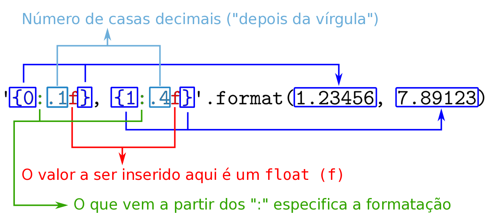

03. Entrada e saída do terminal
Relembrando a aula passada...
Vamos começar relembrando o que aprendemos na aula passada com um exercício.
EXERCÍCIO 1
Exercícios adicionais
Caso você termine o programa acima antes da discussão com a sala, resolva os seguintes exercícios:
Pedindo dados para o usuário
Até agora fizemos programas que, ao serem executados, sempre fazem exatamente a mesma coisa. Seria interessante permitir algum tipo de interação com o usuário. Por enquanto estamos desenvolvendo programas que imprimem valores no terminal, então também vamos utilizar o terminal para receber dados digitados pelo usuário.
Em Python, a função input() pede um texto para o usuário e retorna este texto ao programa. Você pode, por exemplo, guardar esse texto em uma variável para usar em seguida. Teste o seguinte programa no seu computador:
# Pede a cor favorita para o usuário.
cor_favorita = input('Qual a sua cor favorita? ')
# Imprime a cor favorita do usuário.
print(cor_favorita)
O programa acima deve imprimir Qual a sua cor favorita? (note que existe um espaço após a interrogação) no terminal e parar. Nesse momento ele está esperando que o usuário digite algo no terminal. Até que isso aconteça, o programa fica parado na chamada da função input().
Praticando o uso do input
Considere a seguinte função:
Se criarmos um arquivo .py contendo somente esta função, o que você espera que aconteça? Rode seu programa. Ele fez o que você esperava?
O programa acima não vai fazer nada. Nós só estamos definindo a função soma, mas não estamos pedindo para o Python executá-la (ou seja, não estamos chamando a função). O programa a seguir deve imprimir a soma dos números 14 e 28:
Teste o programa acima e verifique se ele faz o que era esperado.
EXERCÍCIO 2
Tipos de dados em Python
Vimos na aula passada que podemos guardar qualquer coisa em variáveis no Python. O que nós não discutimos foi que essas "coisas" que podemos guardar nas variáveis possuem tipos específicos. No início vamos trabalhar com 4 tipos básicos:
- Inteiro (
int): um número sem casa decimal. Ex:34,96,-123,45; - Float (
float): um número real, com "ponto decimal" (também chamamos de "ponto flutuante"). Ex:3.14,-25.1,5.0,5e-1; - String (
str): texto puro (é representado necessariamente com aspas simples ou duplas). Ex:"Hello, world!",'Insper','3.14','"oi"'; - Booleano (
bool): representam "verdadeiro" (True) e "falso" (False).
EXERCÍCIO 3
Exercício adicional
O comando int(3.14) gerou o número inteiro 3. Mas será que ele arredondou o valor? Teste o comando int(2.718). Assumindo que a função int() arredonda o valor, o resultado esperado seria 3. Rode seu programa. Qual foi o resultado? O que isso diz sobre a função int?
EXERCÍCIO 4
Formatação de strings
Na aula passada vimos que podemos formatar uma string utilizando a função .format() para incluir os valores armazenados em variáveis. Por exemplo:
Esse programa vai imprimir a vale 10, b vale 7 e a + b = 17 no terminal. Agora, o que acontece se o valor da variável for um float? Teste o programa a seguir.
Quantas casas decimais do número pi foram apresentadas? E se quisermos mostrar apenas as 3 primeiras?
Para isso podemos usar diretivas de formatação, que podem ser especificadas com um ":" (dois pontos) depois do índice. Por exemplo '{0:.1f}, {1:.4f}'.format(1.23456, 7.89123) vai gerar a string '1.2, 7.8912'. Vamos por partes:

EXERCÍCIO 5
Maneiras antigas de formatar strings em Python
Se você procurar na internet por "formatação de strings em Python" ou algum termo análogo, é bastante provável que você encontre formas diferentes da que apresentamos acima. Por exemplo:
Não se preocupe se não entender esse trecho de código. Essa é a maneira antiga de formatar strings em Python. Procure utilizar a maneira nova que ensinamos, pois ela é mais flexível.
Operações com strings
No programa do exercício 2 nós obtivemos um comportamento diferente do que esperávamos (se precisar, execute o programa novamente para relembrar). Nessa versão do programa, se o usuário digitar 4 e 2 o programa vai imprimir que a soma vale 42. Vimos que isso ocorre porque a função input() sempre devolve uma string, então o que o programa fez foi juntar a string '4' com a string '2', obtendo a string '42'. Essa operação de "juntar strings" é o que chamamos de concatenação.
EXERCÍCIO 6
EXERCÍCIO 7
Exercícios adicionais
Desafio
Faça um programa que pergunta ao usuário um numero n entre 1 e 20 e imprime um quadrado de asteriscos n x n. Exemplo de uso:
Para cumprir essa missão você precisa saber que a string "\n" significa "pule para a próxima linha". Por exemplo:
imprime